Weapon: Bone dagger hidden in cane (previously hidden in shoe)
Fav food: Beef Stew
Nationality/Ethnicity: Nordalpia/Arborean
Fav song: Somethin’ Bad
Weaknesses: Guilt complex and Arrogance
Dream future: A world without sickness
Love interest: N/A
Current job: Doctor & Coroner
Powers:
Vitakinesis - The user can manipulate health, the state of physical/mental/social well-being of an organism or individual. The user can also manipulate the healing process, speeding any or all aspects of healing to the point of regenerating, or slowing and blocking healing even if the victim possesses healing abilities such as Regenerative Healing Factor.
Disease Transfer - The user can transfer any disease to another being, allowing them to cure the subject while also making another sick in their place.
Ascepularian Procesion - Users can perfectly and without a single flaw or mistake perform any and every type of surgery there it was and will ever be whenever they want with zero effort by themselves in a short amount of time.
Hemokinesis - Users can create, shape, and manipulate blood, an essential body fluid in humans and other animals that delivers necessary substances such as nutrients and oxygen to the cells and transports metabolic waste products away from those same cells. The user possesses complete control over blood and all its components and is theirs to freely control.
Osteokinesis - Users can create, shape, move, control, interact and manipulate bones, a rigid tissue that constitutes part of the vertebrate skeleton in animals, of oneself and others. Users can control bare skeletons or entire skeletal systems, including growing, shaping, manipulating density/weight, creating constructs, etc. More advanced users can manipulate bones of other species, or even metaphysical and divine beings. For combative purposes, one can turn bones into spears that brutally skewer enemies, strengthening bones to increase defenses, or positioning bones to defend from incoming attacks.
Halysikinesis - The user can create, summon, shape, manipulate and use any kind of chains and chain-like weapons, including flails, shaping and combining them as needed, or moving them with telekinesis.
Tendril Generation - The user has or can generate tendrils, threadlike structures, stems, petioles, whips, tentacle-like extensions etc. from themselves, others or any other surface.
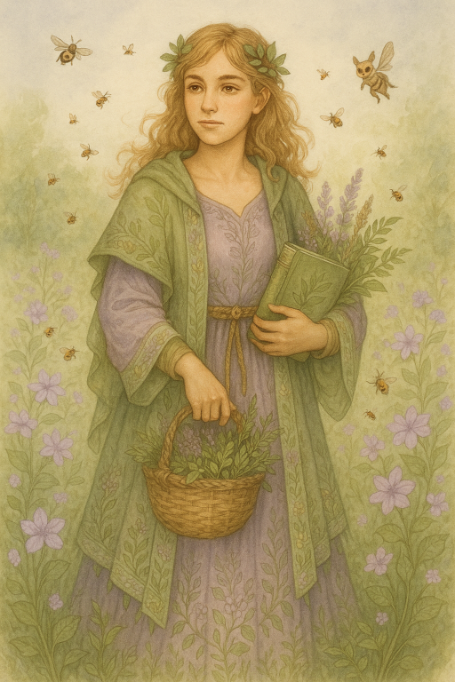
Biene Demetros
Age: 30
Species: Nymph-Human
Pronouns: She/They
Gender: Demigirl
Height: 5’5
Personality: Nurturing, enigmatic, and serene
Fav color: lavender
Birthday: 8/15/1355
Hair color: Dirty blond
Eye color: Golden-honey
Style: Ethereal earth lady.
Fav food: Seasonal Harvest Salad
Nationality/Ethnicity: Nordalpia/Naturhüter
Fav song: Fields of gold
Weaknesses: Stubbornness and Emotional overwhelm and Fire
Dream future: Ecological Harmony
Love interest: N/A
Current job: Beekeeper and Magizoologist.
Powers:
Animal whisperer - The user can perceive, manipulate or otherwise interact with the minds of animals, enabling them to mentally communicate with them as well as potentially read and control their thoughts, memories and emotions.
Floral Manipulation - The user can create, shape and manipulate flowers, they can cause flowers and parts of the flowers, including petals, stems and pollen, to grow and bloom, move/attack, mutate flowers by rearranging DNA structure, and revive withered or dead flowers.
Mélissakinesis - The user can control various species of bees. They control them to do their bidding, for example, helping them during situations, using them against foes, and using them to see locations and gather information about a particular place.
Weaknesses: telekinesis and her need to prove herself
Dream future: renowned master fencer with an academy of students.
Love interest: N/A
Current job: Fencer
Powers:
Exceptional Swordsmanship - Users, either innate or through training, possess incredible mastery and ability in wielding a sword, a bladed melee weapon intended for cutting or thrusting, beyond that of the average person but in the realms of realistic skill and proficiency without nearing or reaching superhuman capabilities.
Enhanced Agility and Reflexes - User with this ability can go from one motion to another effortlessly, effectively dodge attacks, swing from things easily, sprint, do back-flips, leap across rooftops, and numerous other gymnastic, athletic and martial implements with little to no effort.
Heightened Combat Awareness - The user has a much more advanced level of awareness than an ordinary person, and while ordinary people only notice things in general, they notice in detail.
Intuitive - Users possess a intuitive aptitude; a form of intuition that lets them intuitively comprehend the precise mechanisms and operations of events, organisms, objects, fields, and more, without requiring extensive education or explanations, making it possible to intuitively analyze, learn, and understand the complexity of anything.
Kirlian Eye (aura/soul viewing) - The user can perceive and read auras, normally invisible fields of energy that surround every living thing; this can be used to see a target’s emotions, health status, power level, or moral alignment.
Weak lightning control - Users can create, shape, control and manipulate electricity, they possess complete control over electricity, a form of energy resulting from the movement of charged particles (such as electrons or protons). As an elemental power, electricity manipulation is very simple and straightforward accompanied with a near-limitless myriad of uses.
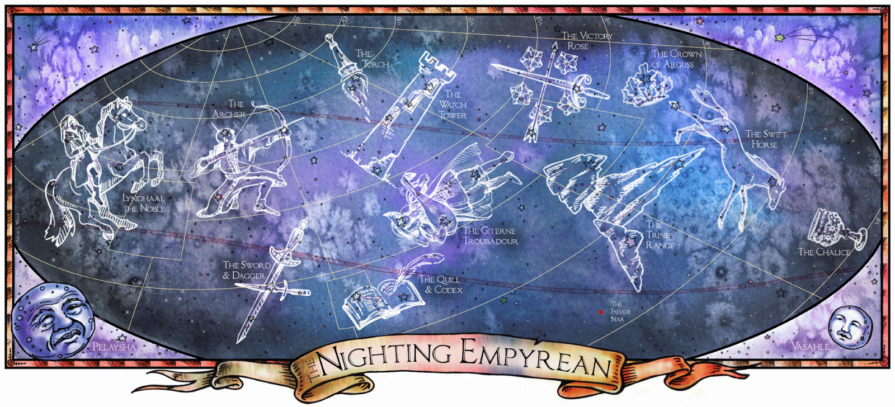
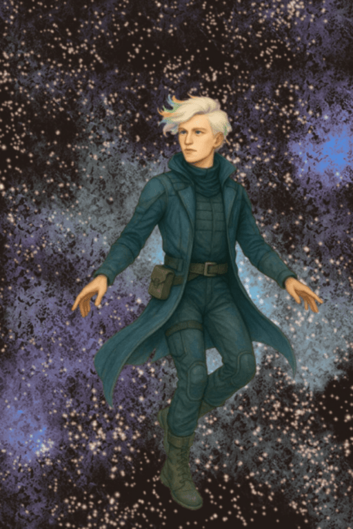
Einar Bjørnsson
Age: 26
Species: Shapeshifter
Pronouns: They/Them
Gender: Non-Binary
Height: 6’0
Personality: Adventurous, analytical, and introspective
Fav color: Midnight Blue
Birthday: 10/29/1353
Hair color: Ashen Blonde
Eye color: Ice blue
Style: Expeditionary explorer attire
Fav food: Smoked Salmon
Nationality/Ethnicity: Nordalpia/Stjerneskær, pioneers of space exploration driven by a long-standing tradition of curiosity and innovation.
Fav song: Space Oddity
Weaknesses: Energy drain and impulsiveness
Dream future: To explore distant galaxies for the possibility of finding life
Love interest: N/A
Current job: Astronaut and astrophysicist
Powers:
Telepathy - The user has telepathy, the psionic ability to read and control the minds and thoughts of humans, animals, and other sentient beings, and to transfer information from one mind to another without the aid of physical communication (noise or movement)
Cosmo-Ergokinesis - Users can create, shape, manipulate and absorb the energies of planets, stars, quasars, voids, nebulas, galaxies or anything else related to the cosmos.
Astral Projection - Users can project or separate their awareness, consciousness, presence or spirit, alternatively known as their astral form, from their material bodies, allowing for perception, interaction and travel independent of mental or physical limitation.
Shapeshifting - Users can change their shape, size, color, density, texture, cellular composition, and/or atomic composition to mimic qualities, impersonate entities, amplify abilities, and/or traverse environments.
Constellation Mimicry - The user with this ability either is or can transform into any or certain constellations, gaining the powers associated with it.
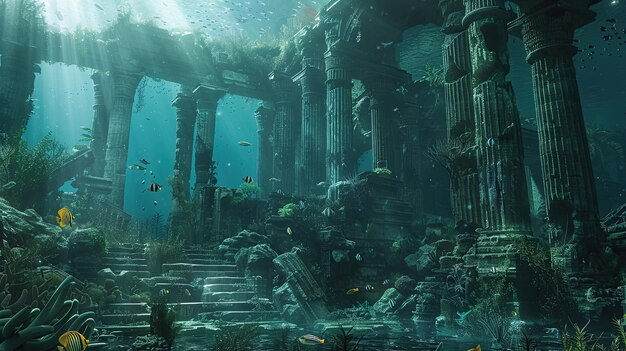
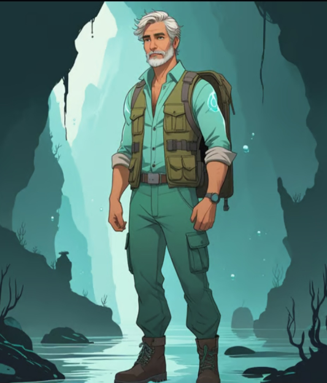
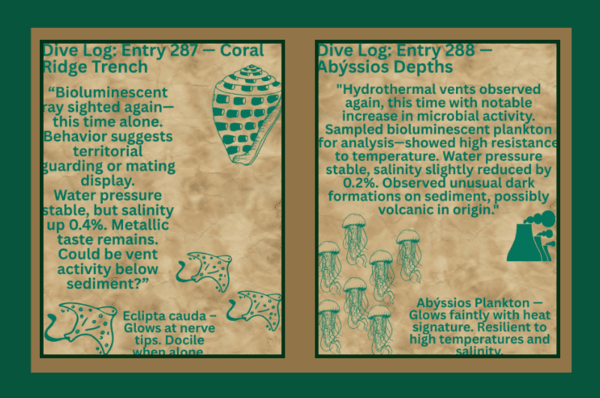
Alexios Kostas
Age: 59
Species: Atlantean
Pronouns: He/Him
Gender: Male
Height: 6’2
Personality: Wise, stoic, compassionate
Fav color: Mint
Birthday: 4/25/1320
Hair color: Salt and pepper
Eye color: sea-green
Style: Casual, practical, and functional
Fav food: grilled mediterranean seafood platter
Nationality/Ethnicity: Nordalpia/Abýssios
Fav song: the sound of silence
Weaknesses: trust issues and easily dehydrated
Dream future: Explore the ocean and know just how it can be both protected and utilized
Love interest: N/A
Current job: Deep sea diver and marine biologist
Powers:
Hydrokinesis - Users have the ability to create ex nihilo, to shape, control/move, and otherwise manipulate water in all forms: whether it is sea or inland, salt or fresh, muddy or pure, hard or soft, streaming or standing, on earth or in the sky, above ground or below, and outside or within organisms.
Deep-sea adaptation - Users are able to survive and adapt to underwater environments, being able to breathe water in lieu of, or along with, a gaseous breathing medium, to swim well and to endure high water pressure and extreme water temperatures.
Enhanced swimming - The user can swim underwater effortlessly and with control, efficiency, precision, traction and balance at any speed.
Aquatic communication - The user can perceive, manipulate or otherwise interact with the minds of marine animals, enabling them to mentally communicate with them as well as potentially read and control their thoughts, memories and emotions.
Bioluminescence - Users can generate bioluminescence, light produced and emitted by a living organism often due to a chemical reaction. Can be used to temporarily blind, disorient, or paralyze a target.
 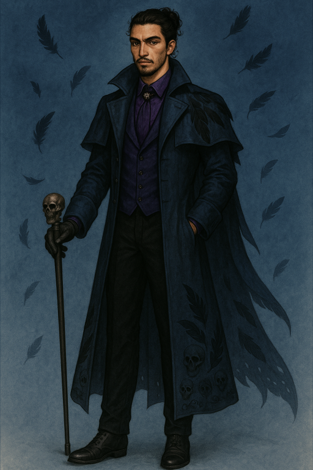
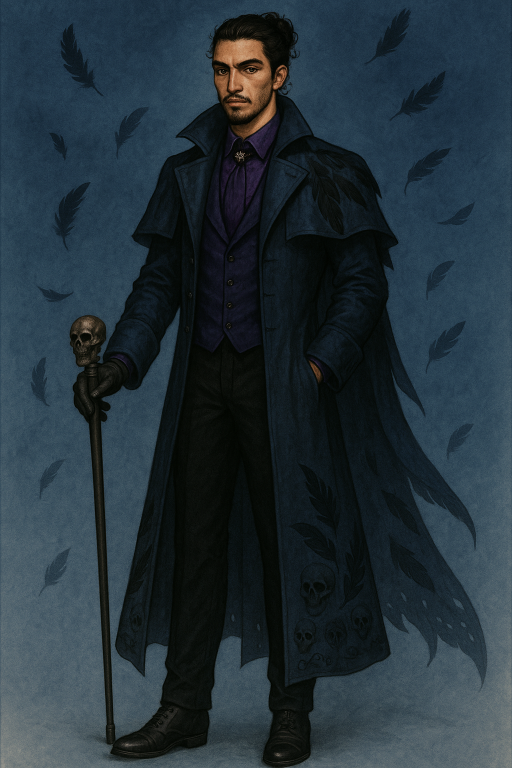

 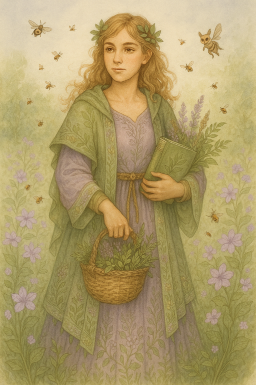
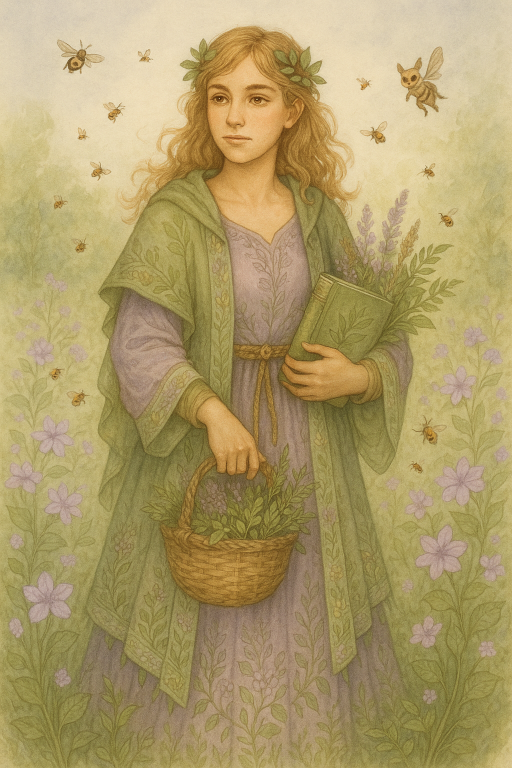
 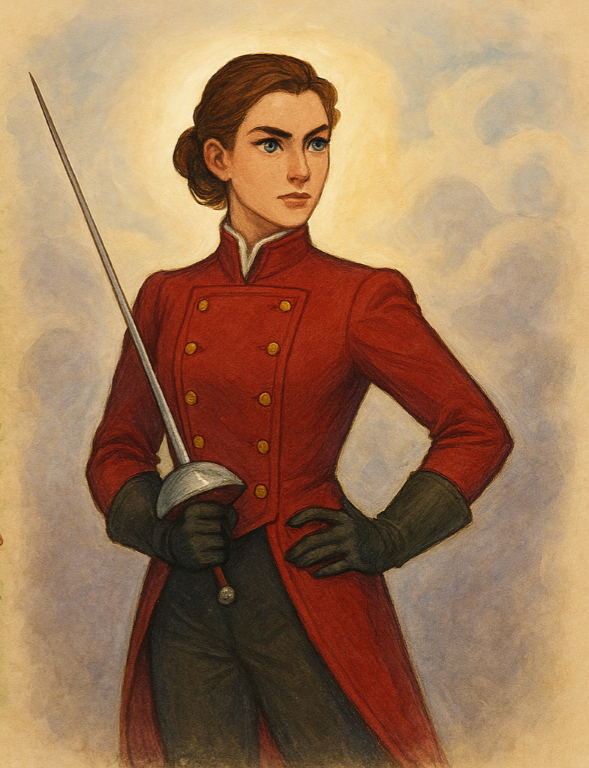
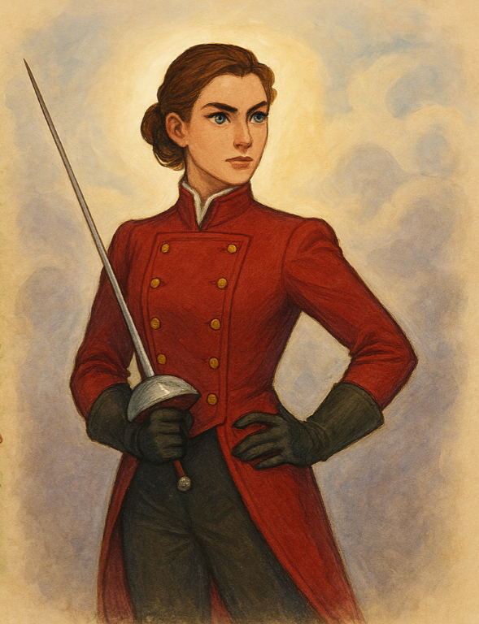